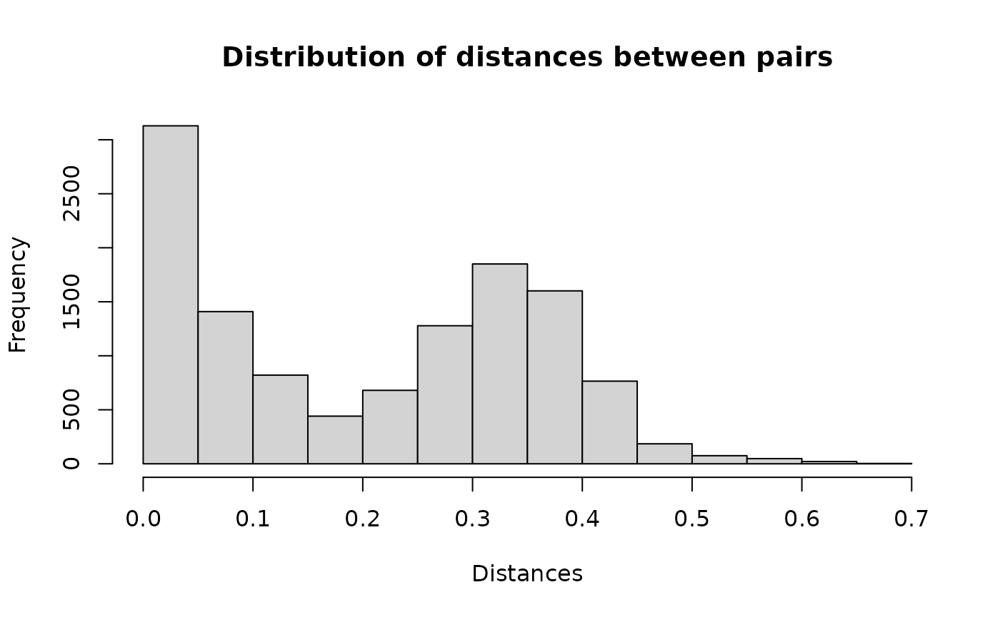

Data
Read the example data from the tutorial on the
reclin package on the URos 2021 Conference. The data
sets are from ESSnet on Data Integration as stated in the
repository:
These totally fictional data sets are supposed to have captured details of
persons up to the date 31 December 2011. Any years of birth captured as 2012
are therefore in error. Note that in the fictional Census data set, dates of
birth between 27 March 2011 and 31 December 2011 are not necessarily in error.
census: A fictional data set to represent some observations from a
decennial Census
cis: Fictional observations from Customer Information System, which is
combined administrative data from the tax and benefit systems
In the dataset census all records contain a person_id. For some of the records
in cis the person_id is also available. This information can be used to
evaluate the linkage (assuming these records from the cis are representable
all records in the cis). -
censusobject has 25343 rows and 13 columns, -
cisobject has 24613 rows and 10 columns.
Census data
head(census)
#> person_id pername1 pername2 sex dob_day dob_mon dob_year hse_num
#> <char> <char> <char> <char> <char> <char> <char> <num>
#> 1: DE03US001001 COUIE PRICE M 1 6 1960 1
#> 2: DE03US001002 ABBIE PVICE F 9 11 1961 1
#> 3: DE03US001003 LACEY PRICE F 7 2 1999 1
#> 4: DE03US001004 SAMUEL PRICE M 13 4 1990 1
#> 5: DE03US001005 JOSEPH PRICE M 20 4 1986 1
#> 6: DE03US001006 JOSH PRICE M 14 2 1996 1
#> enumcap enumpc str_nam cap_add census_id
#> <char> <char> <char> <char> <char>
#> 1: 1 WINDSOR ROAD DE03US Windsor Road 1, Windsor Road CENSDE03US001001
#> 2: 1 WINDSOR ROAD DE03US Windsor Road 1, Windsor Road CENSDE03US001002
#> 3: 1 WINDSOR ROAD DE03US Windsor Road 1, Windsor Road CENSDE03US001003
#> 4: 1 WINDSOR ROAD DE03US Windsor Road 1, Windsor Road CENSDE03US001004
#> 5: 1 WINDSOR ROAD DE03US Windsor Road 1, Windsor Road CENSDE03US001005
#> 6: 1 WINDSOR ROAD DE03US Windsor Road 1, Windsor Road CENSDE03US001006CIS data
head(cis)
#> person_id pername1 pername2 sex dob_day dob_mon dob_year
#> <char> <char> <char> <char> <char> <char> <char>
#> 1: PO827ER091001 HAYDEN HALL M 1
#> 2: LS992DB024001 SEREN ANDERSON F 1 1
#> 3: M432ZZ053003 LEWIS LEWIS M 1 1
#> 4: SW75TQ018001 HARRISON POSTER M 5 1
#> 5: EX527TR017006 MUHAMMED WATSUN M 7 1
#> 6: SW540RB001001 RHYS THOMPSON M 7 1
#> enumcap enumpc cis_id
#> <char> <char> <char>
#> 1: 91 CLARENCE ROAD PO827ER CISPO827ER091001
#> 2: 24 CHURCH LANE LS992DB CISLS992DB024001
#> 3: 53 CHURCH ROAD M432ZZ CISM432ZZ053003
#> 4: 19 HIGHFIELD ROAD SW75TG CISSW75TQ018001
#> 5: 17 VICTORIA STREET CISEX527TR017006
#> 6: 1 SPRINGFIELD ROAD SW540RB CISSW540RB001001We randomly select 12671 records from census and 12306
records from cis.
set.seed(2024)
census <- census[sample(nrow(census), floor(nrow(census) / 2)), ]
cis <- cis[sample(nrow(cis), floor(nrow(cis) / 2)), ]We need to create new columns that concatenate variables from
pername1 to enumpc.
Linking datasets
Using basic functionalities of blocking package
The goal of this exercise is to link units from the CIS dataset to the CENSUS dataset.
result1 <- blocking(x = census$txt, y = cis$txt, verbose = 1)
#> ===== creating tokens =====
#> ===== starting search (nnd, x, y: 12671, 12306, t: 1053) =====
#> ===== creating graph =====Distribution of distances for each pair.
hist(result1$result$dist, main = "Distribution of distances between pairs", xlab = "Distances")
Example pairs.
head(result1$result, n = 10)
#> x y block dist
#> <int> <int> <num> <num>
#> 1: 1 12088 8344 0.04520786
#> 2: 2 12156 8382 0.26164961
#> 3: 3 7243 5759 0.04604095
#> 4: 3 10643 5759 0.37306446
#> 5: 4 8422 6457 0.35876358
#> 6: 6 9442 7042 0.31899476
#> 7: 6 10195 7042 0.04166669
#> 8: 7 745 725 0.16333997
#> 9: 8 3072 2770 0.25784391
#> 10: 8 10717 2770 0.12358326Let’s take a look at the first pair. Obviously there is a typo in the
pername1 but all the other variables are the same, so it
appears to be a match.
cbind(t(census[1, c(1:7, 9:10)]), t(cis[12088, 1:9]))
#> [,1] [,2]
#> person_id "SW122AB001001" "SW122AB001001"
#> pername1 "GEURGE" "GEORGE"
#> pername2 "HUGHES" "HUGHES"
#> sex "M" "M"
#> dob_day "19" "19"
#> dob_mon "5" "5"
#> dob_year "1942" "1942"
#> enumcap "1 VICTORIA ROAD" "1 VICTORIA ROAD"
#> enumpc "SW122AB" "SW122AB"Assessing the quality
For some records, we have information about the correct linkage. We can use this information to evaluate our approach.
matches <- merge(x = census[, .(x=1:.N, person_id)],
y = cis[, .(y = 1:.N, person_id)],
by = "person_id")
matches[, block:=1:.N]
head(matches)
#> Key: <person_id>
#> person_id x y block
#> <char> <int> <int> <int>
#> 1: DE03US001003 1357 10248 1
#> 2: DE03US008001 4506 2506 2
#> 3: DE03US012002 2706 12005 3
#> 4: DE03US012003 6317 11103 4
#> 5: DE03US013003 4388 10673 5
#> 6: DE03US014003 9463 11793 6So in our example we have 5991 pairs.
result2 <- blocking(x = census$txt, y = cis$txt, verbose = 1,
true_blocks = matches[, .(x, y, block)])
#> ===== creating tokens =====
#> ===== starting search (nnd, x, y: 12671, 12306, t: 1053) =====
#> ===== creating graph =====Let’s see how our approach handled this problem.
result2
#> ========================================================
#> Blocking based on the nnd method.
#> Number of blocks: 8441.
#> Number of columns used for blocking: 1053.
#> Reduction ratio: 0.9999.
#> ========================================================
#> Distribution of the size of the blocks:
#> 2 3 4 5 6 7 8 9
#> 5575 2084 609 140 25 6 1 1
#> ========================================================
#> Evaluation metrics (standard):
#> recall precision fpr fnr accuracy specificity
#> 99.8159 99.5326 0.0001 0.1841 99.9999 99.9999
#> f1_score
#> 99.6740It seems that the default parameters of the NND method result in an
FNR of 0.18%. We can see if decreasing the epsilon
parameter as suggested in the Nearest
Neighbor Descent vignette will help.
ann_control_pars <- controls_ann()
ann_control_pars$nnd$epsilon <- 0.2
result3 <- blocking(x = census$txt, y = cis$txt, verbose = 1,
true_blocks = matches[, .(x, y, block)],
control_ann = ann_control_pars)
#> ===== creating tokens =====
#> ===== starting search (nnd, x, y: 12671, 12306, t: 1053) =====
#> ===== creating graph =====Changing the epsilon search parameter from 0.1 to 0.2
decreased the FNR to 0.07%.
result3
#> ========================================================
#> Blocking based on the nnd method.
#> Number of blocks: 8448.
#> Number of columns used for blocking: 1053.
#> Reduction ratio: 0.9999.
#> ========================================================
#> Distribution of the size of the blocks:
#> 2 3 4 5 6 7 8 9
#> 5587 2082 604 142 26 5 1 1
#> ========================================================
#> Evaluation metrics (standard):
#> recall precision fpr fnr accuracy specificity
#> 99.9332 99.8331 0.0000 0.0668 100.0000 100.0000
#> f1_score
#> 99.8831Finally, compare the NND and HNSW algorithm for this example.
result4 <- blocking(x = census$txt, y = cis$txt, verbose = 1,
true_blocks = matches[, .(x, y, block)],
ann = "hnsw")
#> ===== creating tokens =====
#> ===== starting search (hnsw, x, y: 12671, 12306, t: 1053) =====
#> ===== creating graph =====It seems that the HNSW algorithm also performed with 0.07% FNR.
result4
#> ========================================================
#> Blocking based on the hnsw method.
#> Number of blocks: 8446.
#> Number of columns used for blocking: 1053.
#> Reduction ratio: 0.9999.
#> ========================================================
#> Distribution of the size of the blocks:
#> 2 3 4 5 6 7 8 9
#> 5586 2078 607 142 26 5 1 1
#> ========================================================
#> Evaluation metrics (standard):
#> recall precision fpr fnr accuracy specificity
#> 99.9332 99.8331 0.0000 0.0668 100.0000 100.0000
#> f1_score
#> 99.8831